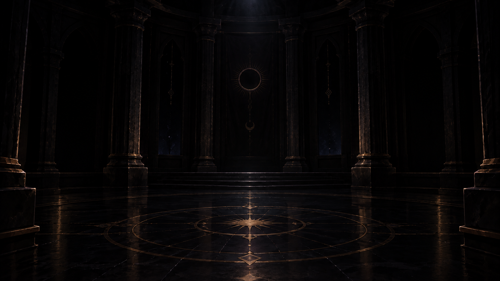
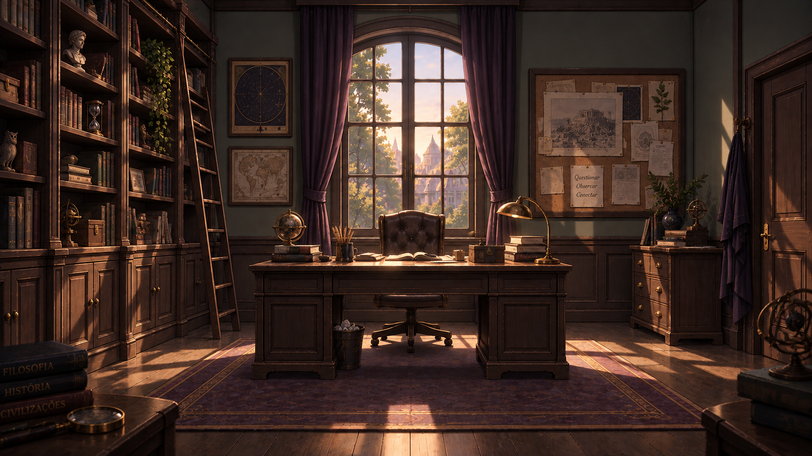
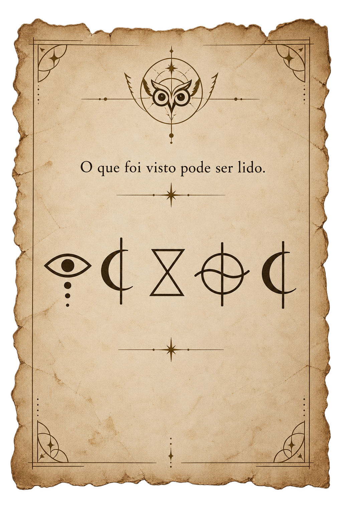
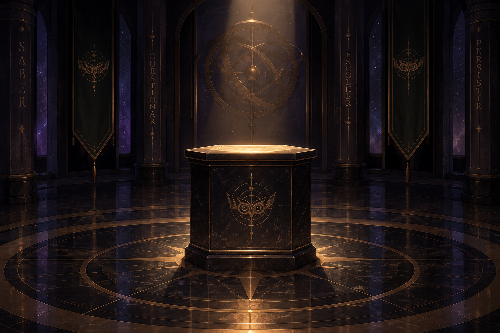
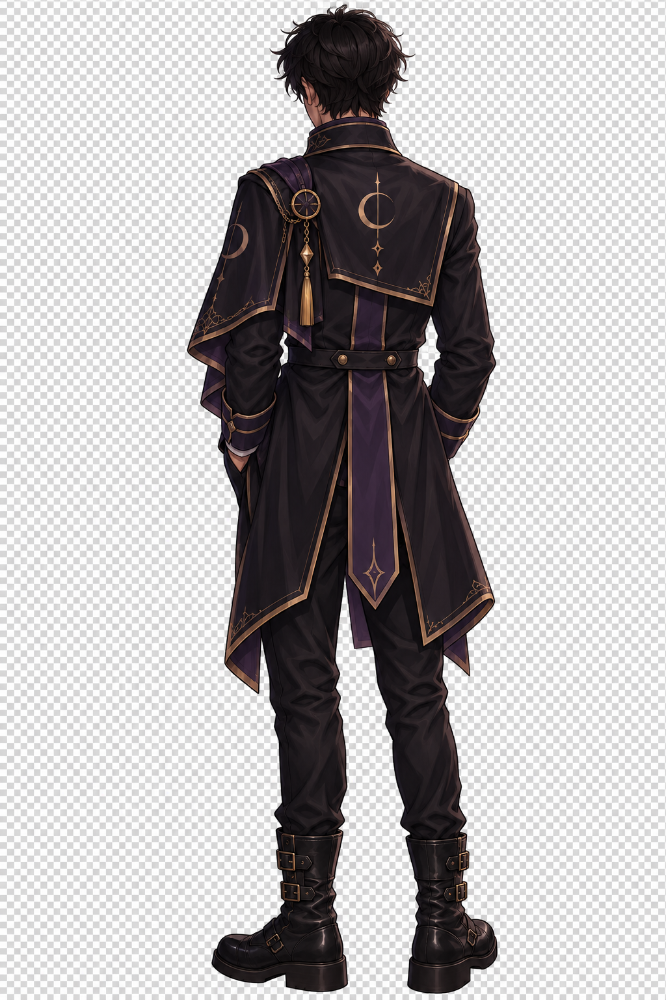

Eu fui.
Não porque obedecer a bilhetes anônimos seja uma boa ideia. Porque, a essa altura, ignorá-los parecia ainda pior.
arco 2 · anotação 03
Venha sozinha. Não leve luz.
Eu fui.
Não porque obedecer a bilhetes anônimos seja uma boa ideia. Porque, a essa altura, ignorá-los parecia ainda pior.
21:17
Meu celular ainda tinha bateria. Tecnicamente.
Toque para acender.

O escuro não estava vazio.
Teste I
Três coisas estão onde não deveriam estar.

Observe a sala. Nem tudo que chama atenção é um intruso.
0 de 3 intrusos marcados.
Teste II
O que foi visto pode ser lido.

As fichas revelaram três letras. Monte a instrução de cinco letras gravada na folha.
0 de 5 letras.
— PENSE. Não era uma resposta. Era uma ordem.
interferência
— A chave que você acabou de me dar?
Memorize a ordem dos sinais. Depois, repita a sequência para revelar a instrução.
Observe a sequência.
Teste III
“Abra a caixa.”
— Você acabou de mandar eu duvidar de você.

Os três objetos continuam disponíveis.
click
— Eu nem usei a chave.

— Era isso?
“Não.”
“Era a escolha.”
retorno
— Ah, claro. Porque aparentemente trocar de roupa sem perceber é normal agora.
— Público difícil.
— ...eu vi isso.
ORDEM DO ECLIPSE // REGISTRO
INICIAÇÃO CONCLUÍDA
TESTE I CONCLUÍDO
TESTE II CONCLUÍDO
TESTE III CONCLUÍDO

21:17
depois do sinal
Mas havia uma melodia baixa demais para vir dos alto-falantes da escola.
— Certo. Então isso também veio comigo.